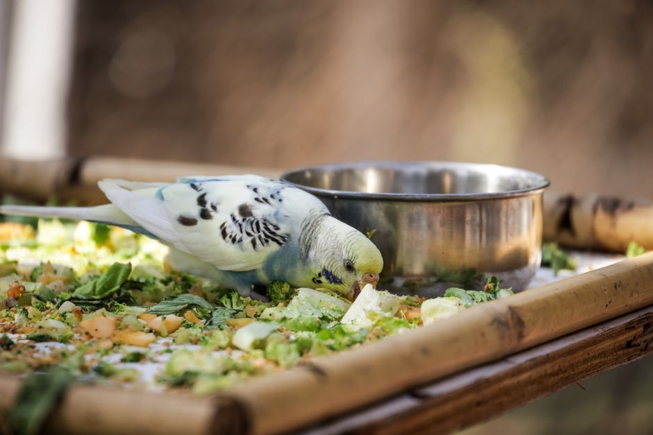
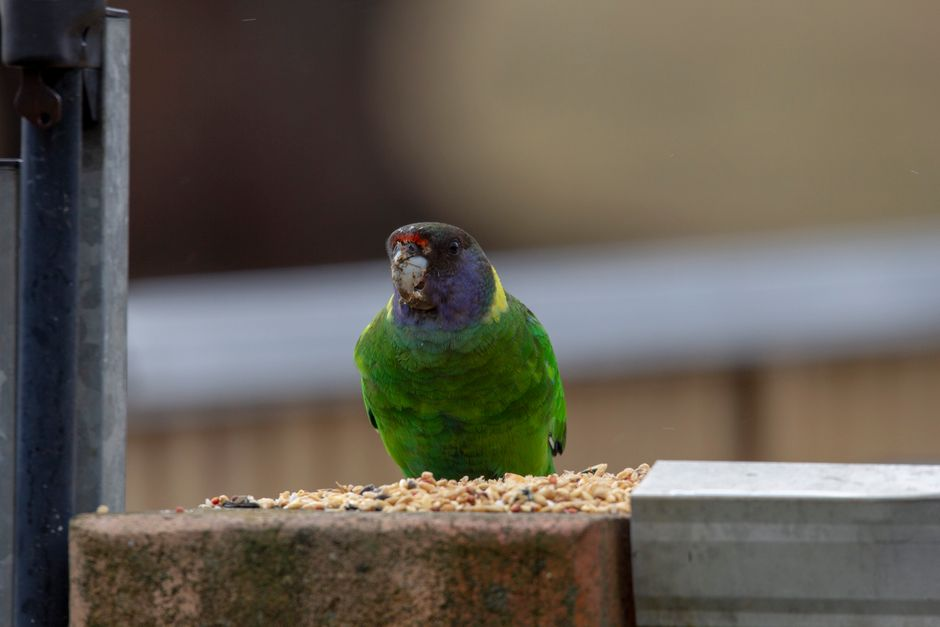

How to Provide a Balanced Diet for Your Parrot
Feeding your parrot a balanced diet is crucial for its overall health and well-being. A nutritious diet not only keeps your feathered friend healthy but also helps prevent common health issues. This article will provide you with practical, actionable advice on how to ensure your parrot receives the proper nutrition it needs.

Photo: Magda Ehlers / Pexels
Understanding the Basics of Parrot Nutrition
Parrots require a diverse diet that includes a mix of seeds, fruits, vegetables, and sometimes even pellets. A balanced diet should consist of 70-80% vegetables and fruits, 15-20% seeds, and 5-10% specialized pellets. The remaining 5-10% can include occasional treats and sprouted seeds.
A Typical Balanced Diet for Parrots

Photo: Claudia Franks / Pexels
To create a balanced diet, start by including a variety of fresh vegetables and fruits. For example, you can serve your parrot a bowl containing the following: - 1 cup of sliced apple - 1/2 cup of chopped carrot - 1/2 cup of grated sweet potato - 1/4 cup of kale - 1/4 cup of blueberries
This mix provides essential vitamins, minerals, and fiber. Avoid giving fruits with high sugar content like bananas and grapes, as they can lead to weight issues.
Providing Fresh Water
Fresh, clean water is essential for your parrot's health. Parrots should have access to clean water at all times. Change the water daily and clean the water bowl with a mild, parrot-safe disinfectant once a week.
Introducing Pellets
Pellets are formulated to provide all the necessary nutrients a parrot needs. They should be fed alongside fresh foods to ensure your parrot gets a balanced diet. Offer a quarter cup of pellets per bird each day. You can mix different types of pellets to keep your parrot interested.
Scenario: Transitioning to Pellets
If your parrot is resistant to pellets, start by mixing them with your bird's favorite seeds. Gradually increase the proportion of pellets until your parrot is eating them whole. For example, start by mixing 1 tablespoon of pellets with 1 tablespoon of seeds and gradually increase the pellets to 2 tablespoons while decreasing the seeds.
Feeding Frequency
Parrots should be fed twice a day, once in the morning and once in the evening. This frequency ensures that your bird gets the nutrients it needs throughout the day.
Example: Daily Feeding Schedule
- Morning: A mix of 1/2 cup of vegetables, 1/2 cup of fruits, and 1 tablespoon of pellets.
- Evening: A mix of 1/2 cup of vegetables, 1/2 cup of fruits, and 1 tablespoon of pellets.
Avoiding Harmful Foods
Some foods are toxic to parrots and should be avoided. These include: - Chocolate - Avocado - Onions - Garlic - Caffeinated beverages
These foods can cause serious health issues and should be kept out of reach of your parrot.
Conclusion
Providing a balanced diet for your parrot is a key aspect of responsible bird ownership. By following these guidelines, you can ensure that your parrot is healthy, happy, and lives a long life. Remember, consistency is key, and your parrot will thrive with a well-planned and varied diet.
Recommended products
As an Amazon Associate, I earn from qualifying purchases.